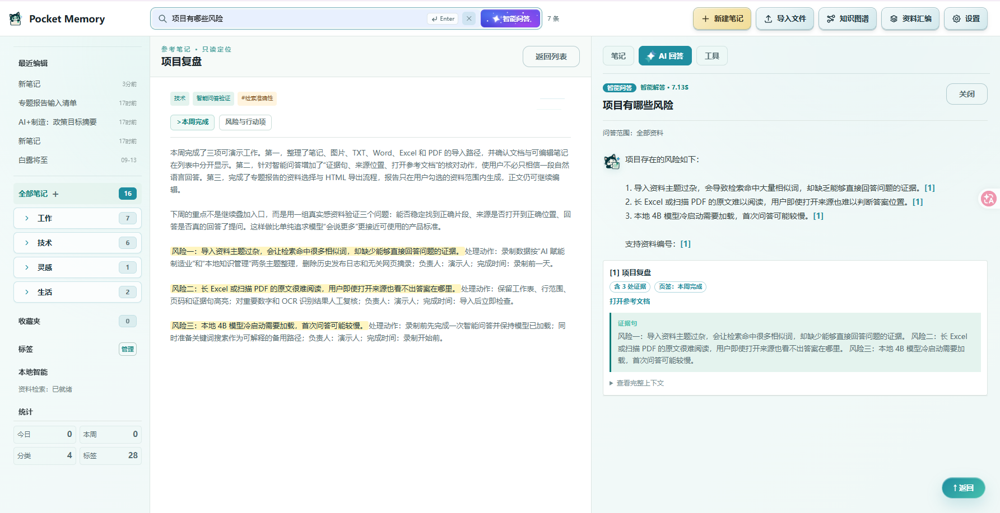
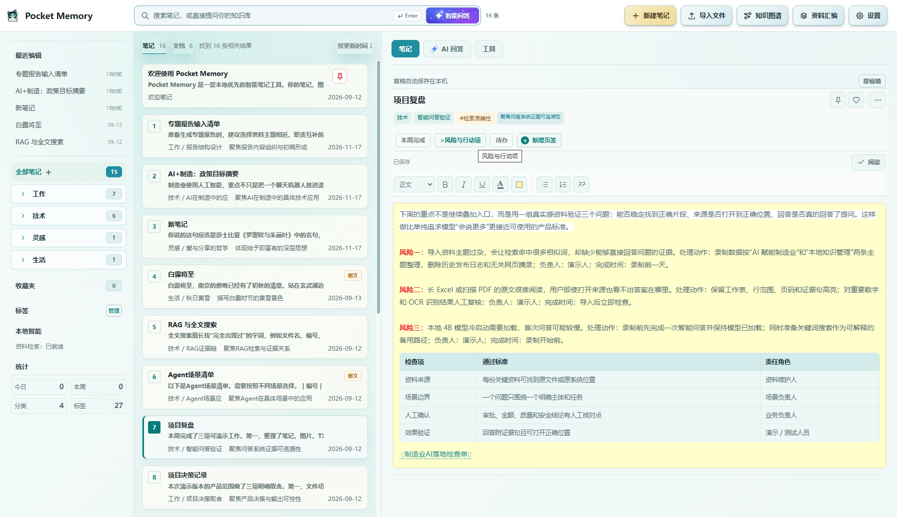
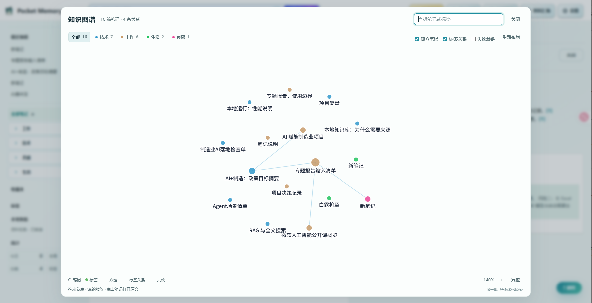
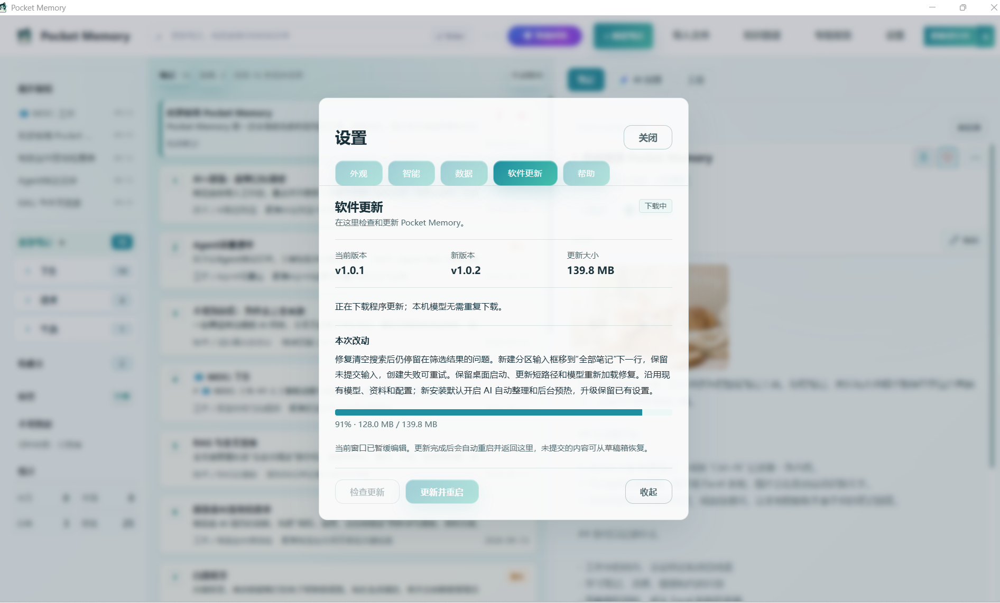

Agent 的实际功能及现有成果打开完整文稿
使用本地资料导出的样例，可点击引用编号核对原文。
Pocket Memory · 本地资料工作台
写下想法，放进文档，把有关的笔记连起来。
需要时提问、核对出处，或整理一份文稿。
完整离线包内置本地 4B 模型 · 解压即可启动
笔记、附件和 AI 处理留在本机，无需配置 API 密钥。敏感资料留在自己手中，数据更安全。
看看它能做什么
查看完整问答智能问答 · 有据可查
先从自己的笔记和文件中寻找证据，再组织回答。沿着来源编号回到原文，查看支持结论的内容。
复杂问题与扫描件仍可能漏答或错引。重要结论，请多核对一步。
保留原文及其位置，理解问题，再结合全文与语义检索查找资料。候选内容经过重排，本地模型基于证据组织回答，并提供来源入口。
支持笔记、多页签、TXT、Word、Excel、PDF 与图片 OCR；问题中的对象和范围越清楚，越方便核对。
笔记与多页签 / Word / Excel / PDF / TXT / 图片 OCR
看一次实际操作
写笔记、导入文件、提问，
再打开原文核对。
视频暂时无法加载，请稍后刷新重试。
笔记与文件 · 放进来，也能继续整理
写下来的内容和已经存好的文件，
都能按自己的习惯组织。
背景、方案、风险和行动分别记录。富文本、表格、图片与链接，容得下日常记录，也方便不断补充。

查看完整界面已有资料，不必重新抄一遍
DOCX · XLSX · PDF · TXT · 图片

查看完整界面双链与知识图谱
把相关笔记连起来，也看看哪些内容引用了它。知识图谱让一个项目、主题或标签周边的积累变得可见。
图谱呈现已有双链与标签，不自动生成或改写内容，也不作为问答的默认证据库。
用得久，也由你掌握
本地存储笔记、页签与原始附件放在你选择的本机目录。检索、问答、资料汇编与 OCR 使用本地组件，不把资料提交给云端模型。
草稿与历史版本切换笔记时保留草稿，历史版本方便回看；恢复遇到版本冲突时，可以另存副本。
备份与迁移导出包含笔记、页签和附件的 ZIP 备份。解压后，在设置中切换到该资料目录，继续积累。
在「设置 → 软件更新」查看改动并更新重启。
常规更新保留已有模型、资料与设置。

查看完整界面从一份熟悉的资料开始
下载完整离线包，解压后运行 PocketMemory.exe。
内置本地 4B 模型，无需配置 API 密钥。
开始使用之前
笔记和文件保存在本机，问答与资料汇编使用本地模型，不把资料发送给云端模型。
可以，无需独立显卡。回答速度取决于电脑性能、可用内存、资料长度和正在运行的软件。
需要。复杂问题或识别不清的扫描件可能漏答、错引；重要结论请通过来源核对，文稿审阅后再使用。
可以导出单文件 HTML，用浏览器打开。文稿保留引用及相关依据；接收者不会自动得到整个资料库。分享前请检查文稿内的来源和明细是否适合分享。
完整离线包已经包含现有 4B 模型和所需组件。完整解压后运行 PocketMemory.exe。
在「设置 → 软件更新」检查并安装新版本。常规程序更新保留本地模型、资料和配置，失败时支持回退。